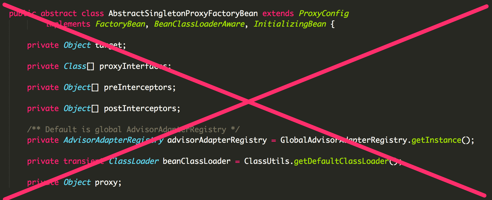
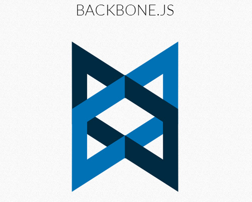
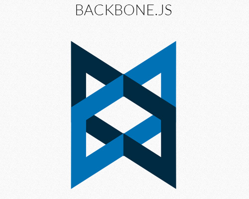

JavaScript 101
Andrew Huffman
What is JavaScript?
It's not Java!
Okay, so what is JavaScript?
Scripting language for web clients
 

Document Object Model (DOM)

Okay, so what is JavaScript?
...and now the server.


JavaScript is Weird
[]+(-~function(){}-~function(){}-~function(){}-~function(){}) /* "4" */({}+[])[!+[]+!+[]+!+[]]+(![]+[])[!+[]+!+[]+!+[]] /* "js" */"0" == false /* true */
!"0" /* false */
typeof null === 'object' /* true */(function foo() {
// Do something
})();
function makeAddFunction(arr, amount) {
arr["add"+amount] = function() {
var idx = 0, newArray = [];
this.forEach(function(value) { newArray.push(value+amount) });
return newArray;
}
}
var myArray = [2,4,5];
makeAddFunction(myArray, 5); //Creates myArray.add5
var newArray = myArray.add5(); //[7,9,10]
newArray.add5(); //Error!
JavaScript Doesn't Force Structure
var source = "./imgs",
maxHeight = 1000;
s.readdir(source, function(err, files) {
if(err) {
console.log("Error finding files: "+err);
} else {
files.forEach(function(filename)) {
gm(source+filename).size(function(err, imgProperties) {
if (err) {
console.log("Error identifying file size: "+err);
} else {
var aspect = (values.width / values.height)
widths.forEach(function(width, widthIndex) {
height = Math.min(Math.round(width/aspect), maxHeight);
console.log("resizing " + filename + " to " + width+'x'+height);
this.resize(width, height).write(destination, function(err) {
if(err) { console.log('Error writing file: '+err); }
});
}).bind(this);
}
})
}
}
}JavaScipt Types
var aNumber = 5; /* Number */
aNumber = aNumber/2; /* = 2.5 */
var aString = "A string"; /* String */
var aBool = true; /* Boolean */
var arr = [1,2,3]; /* Array */
var regEx = /^[A-Z]+/; /* RegExp */
var aFun = function(x) { return x + 1}; /* Function */
var anObjLiteral = { foo: "bar" }; /* Object */
var aNull = null;
var anUndefined; /* undefined */
var someObj = { "a": "b" };
someObj.c; /* undefined */Object Literals
var theWallAlbum = {
title: "The Wall",
artist: "Pink Floyd",
tracks: ["In the Flesh?", "The Thin Ice", ...],
isAwesome: true,
rating: 5,
numTracks: function() {
return theWallAlbum.tracks.length;
}
};
theWallAlbum.title; //"The Wall"
theWallAlbum["artist"]; //"Pink Floyd"
theWallAlbum.released = "Nov 30, 1979";
theWallAlbum.numTracks(); //27Arrays
var anArray = [1,2,3,"four",false];
anArray[2]; /* 3 */
anArray.length; /* 5 */
anArray.push(6); /* [1,2,3,"four",false,6] */
anArray.pop(); /* returns 6 */
anArray.join(","); /* "1,2,3,four,false" */
anArray.forEach(function(elm) { /* Do something */ });
anArray.filter(function(elm) { return elm > 1 }); /* [3,4] */
var sumArray = [1,2,3,4];
sumArray = sumArray.map(function(n) { return n*n }); //[1,4,9,16]
sumArray.reduce(function(prev, curr) { return prev + curr }); //30Functions
foo(); /* > "foo called" */
/* Declaration */
function foo() {
console.log("foo called");
}
bar(); /* Error! */
/* Expression */
var bar = function() {
console.log("bar called");
}
/* logMessage(msg[, tag, [level]]) */
function logMessage(msg) {
var tag = arguments[1] || "Global",
level = arguments[2] || "INFO";
console.log("[%s] - [%s]: %s", level, tag, msg);
}
logMessage("Something bad happened.", "PageController", "ERROR");Nested Functions
function goodArtistTable(artists) {
function _buildRow(artist) {
var row = $("<tr>");
row.append($("<td>").text(artist.name));
row.append($("<td>").text(artist.album));
return row;
}
var goodArtists = artists.filter(function(artist) { return artist.isGood });
var table = $("<table>");
goodArtists.map(_buildRow).forEach(
function(row) {
table.append(row)
}
);
return table;
}Closures
function adderTracker() {
var additions = 0;
return function(x, y) {
additions++;
console.log("additions: "+additions)
return x+y;
}
}
var add = adderTracker();
add(1,2); // > "additions: 1"
add(4,2); // > "additions: 2"
add(12,2); // > "additions: 3"Closures: Use Case
xhr.get("/employees", function(err, response) {
console.log("Server response for /employees: %j", response);
if (err) {
console.log("Error communicating with server.");
console.error(err.stack);
} else {
if (response && response.data && response.data.length > 0) {
console.log("Results: %j", response.data);
/* Do something with data */
}
}
)); xhr.get("/departments", function(err, response) {
console.log("Server response for /departments: %j", response);
if (err) {
console.log("Error communicating with server.");
console.error(err.stack);
} else {
if (response && response.data && response.data.length > 0) {
console.log("Results: %j", response.data);
/* Do something with data */
}
}
));Closures: Use Case
var _handleServerResponse(next) {
return function(err, response) {
var isError = !!err;
console.log("Server responded - endpoint: %s isError: %s, response: %j",
response.endpoint, isError, response);
if(isError) { console.error(err.stack); }
var formattedResponse = {
success: !isError,
error: err,
response: response,
data: (response && response.data && response.data.length >= 0) ? response.data : []
};
next(formattedResponse);
}
}Closures: Use Case
xhr.get("/employees",
_handServerResponse(function(response) {
response.data.forEach(function(emp) {
//Add employee to table
});
}
));
xhr.post("/departments",
_handServerResponse(function(response) {
response.data.forEach(function(dept) {
//Add department to table
});
}
));Constructing Objects
Objects ← → Functions
function Person(name, age) {
this.name = name;
this.age = age;
}
Person.prototype = {
getName: function() { return this.name; },
getAge: function() { return this.age; }
};function Person(name, age) {
this.name = name;
this.age = age;
this.getName = function() { return this.name; };
this.getAge = function() { return this.age; };
}var john = new Person("John", 33);
john.getAge(); //33
Prototype Augmentation
Array.prototype.double = function() {
var doubleArray = this.slice(0); //Copies 'this' array
this.forEach(function(elm) {
doubleArray.push(elm)
});
return doubleArray;
}
var doubleArray = [1,2,3].double(); //[1,2,3,1,2,3]Prototype Inheritence
/* Employee inherits from Person */
function Employee(name, age, department) {
Person.call(this, name, age)
this.department = department
}
Employee.prototype = new Employee()
Employee.prototype.constructor = Employee
Employee.prototype.getDepartment = function() {
return this.department
}
var sally = new Employee("Sally", 29, "Human Resources")
sally instanceOf Person // true
sally.getDepartment() //"Human Resources"
sally.getName() //"Sally"
Gotchas: 'this' Scoping
'this' refers to the context a function is called within.
function ObjA() {
this.myField = "ObjA's Field";
this.callMeBack = function(aFun) { aFun() };
}
function ObjB() {
this.myField = "ObjB's Field";
this.printMyField = function() {
console.log("myField: %s", this.myField)
};
}
var objA = new ObjA();
var objB = new ObjB();
objA.callMeBack(objB.printMyField); // > "myField: undefined"
objA.callMeBack(objB.printMyField.bind(objB)); // > "myField: objB's Field"
objA.callMeBack(objB.printMyField.bind(objA)); // >"myField: ObjA's Field"Other Gotchas
- Lazy Scoping
- Globals
for-inloops
Deferreds & Promises
function getEmployeesWithManager(manager) {
var deferred = new Deferred();
xhr("/employees").then(
function success(data) {
var managerEmployees =
data.filter(function(emp) {
return emp == manager
}
);
deferred.resolve(managerEmployees);
}, function err(err) {
var reason = err.msg;
deferred.reject(reason)
}
);
return deferred.promise;
}getEmployeesWithManager("Jane").then(
function success(janesEmployees) {
/* Do Something */
}, function err(errMsg) {
console.error(errMsg);
}
);
Aspects
Modules
Asynchronous Module Definitions (AMD)
define(["dojo/declare", "dojo/form/Form", "dojo/form/TextBox"],
function(declare, Form, TextBox) {
return declare("widgets/MyWidget", {
/* Define widget */
});
}
)Modules
NodeJS Modules
/* Define Module */
module.exports.Model = {};
var EmployeeModel = {
getEmployees: function(onFinish) {
//retrieve employees from DB
onFinish(error, results);
},
addEmployee: function(employee, onFinish) {
//add employee to DB
onFinish(error, newEmployeeId);
}
}
module.exports.Model.Employee = EmployeeModel